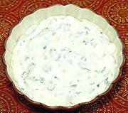

|
Malabar Spinach RaitaIndia - Andhra | ||||
| Makes: Effort: Sched: DoAhead: |
2 cups ** 45 min Yes |
Raitas are often used as a cooling salad, contrast for heavily seasoned dishes. I consider this recipe excellent as a spread, but if I wanted a "cooling" salad I'd cut the amount of both chilis in half. | |||
|
4 1/2 2 ---- 3 1/4 1/4 5 1/16 2 1/4 ---- tt |
oz c --- t t t t t --- |
Malabar Spinach (1) Chili Serrano (2) Yogurt, plain -- Tadka Chili, red (3) Cumin Seed Urad Dal (4) Curry Leaves (5) Asafoetida (6) Oil Mustard Seed -- Finish Salt (opt) |
Prep - (10 min)
|